Subsections
Crawler internal operation
The system is designed for continuous operation.
The harvester processes a URL in several steps as detailed
in Figure 2. As a start-up initialization the
frontier has to be seeded with some relevant URLs. All URLs are
normalized before they are entered in the database.
Data can be exported in various formats including the ALVIS XML
document format
and
Dublin Core
records.
Figure 2:
Architecture for the Combine focused crawler.
|
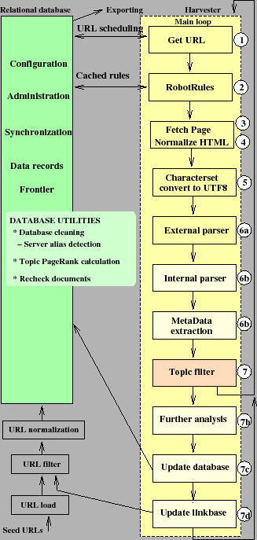
|
The steps taken during crawling (numbers refer to Figure 2):
- The next URL is fetched from the scheduler.
- Combine obeys the Robots
Exclusion Protocol.
Rules are cached locally.
- The page is retrieved using a GET, GET-IF-MODIFIED, or HEAD HTTP request.
- The HTML code is cleaned and normalized.
- The character-set is detected and normalized to UTF-8.
- The page (in any of the formats PDF, PostScript, MSWord, MSExcel, MSPowerPoint, RTF and TeX/LaTeX) is converted to HTML or plain
text by an external program.
- Internal parsers handles HTML, plain text and images.
This step extracts structured information like metadata (title, keywords, description ...), HTML links,
and text without markup.
- The document is sent to the topic filter. If the
Web-page is relevant with respect to the focus topic,
processing continues with:
- Heuristics like score propagation.
- Further analysis, like genre and language
identification.
- Updating the record database.
- Updating the frontier database with HTML links and URLs
extracted from plain text.
Depending on several factors like configuration, hardware, network,
workload, the crawler normally processes between 50 and 200
URLs per minute.
In order to successfully select and crawl one URL the following conditions
(in this order) have to be met:
- The URL has to be selected by the scheduling algorithm (section
4.4).
Relevant configuration variables:
WaitIntervalHost (section 9.1.32),
WaitIntervalHarvesterLockRobotRules (section 9.1.29),
WaitIntervalHarvesterLockSuccess (section 9.1.30)
- The URL has to pass the allow test.
Relevant configuration variables: allow (section 9.2.1)
- The URL is not be excluded by the exclude test (see section
4.3).
Relevant configuration variables: exclude (section 9.2.4)
- The Robot Exclusion Protocol has to allow crawling of the URL.
- Optionally the document at the URL location has to pass the topic filter
(section 4.5).
Relevant configuration variables:
classifyPlugIn (section 9.1.3),
doCheckRecord (section 9.1.6).
Each document is parsed and analyzed by the crawler in order to store
structured document records in the internal MySQL database. The
structure of the record includes the fields:
- Title
- Headings
- Metadata
- Plain text
- Original document
- Links - HTML and plain text URLs
- Link anchor text
- Mime-Type
- Dates - modification, expire, and last checked by crawler
- Web-server identification
The system selects a document parser based on the Mime-Type together
with available parsers and converter programs.
- For some mime-types an external program
is called in order to convert the document to a format handled internally (HTML or plain text).
Relevant configuration variables: converters (section 9.2.3)
- Internal parsers handle HTML, plain text, TeX, and Image.
Relevant configuration variables: converters (section 9.2.3)
Supporting a new document format is as easy as providing a program
that can convert a document in this format to HTML or plain text.
Configuration of the mapping between document format (Mime-Type) and converter program is done in the complex configuration variable 'converters' (section 9.2.3).
Out of the box Combine handle the following document formats: plain text, HTML,
PDF, PostScript, MSWord, MSPowerPoint, MSExcel, RTF, TeX, and images.
URL filtering
Before an URL is accepted for scheduling (either by manual loading or
recycling) it is normalized and validated. This process comprises a
number of steps:
- Normalization
- General practice: host-name lowercasing, port-number
substitution, canonical URL
- Removing fragments (ie '#' and everything after that)
- Cleaning CGI repetitions of parameters
- Collapsing dots ('./', '../') in the path
- Removing CGI parameters that are session ids, as identified by
patterns in the configuration variable sessionids (section 9.2.6)
- Normalizing Web-server names by resolving aliases. Identified by
patterns in the configuration variable serveralias.
These patterns can be generated by using the program
combineUtil to analyze a crawled corpus.
- Validation: A URL has to pass all three validation steps
outlined below.
- URL length has to be less than configuration variable
maxUrlLength (section 9.1.14)
- Allow test: one of the Perl regular expressions in the
configuration variable
allow (section 9.2.1) must match the URL
- Exclude test: none of the Perl regular expressions in the
configuration variable
exclude (section 9.2.4) must match the URL
Both allow and exclude can contain two types of regular expressions
identified by either 'HOST:' or 'URL' in front of the
regular expression. The 'HOST:' regular expressions are matched only against the
Web-server part of the URL while the 'URL' regular expressions
are matched against the entire URL.
Crawling strategy
The crawler is designed to run continuously in order to keep
crawled databases as up-to-date as possible.
Starting and halting crawling is done manually.
The configuration variable AutoRecycleLinks determines if the crawler should
follow all valid new links or just take those that already are
marked for crawling.
All links from a relevant document are extracted, normalized and stored
in the structured record. Those links that pass the selection/validation
criteria outlined below are marked for crawling.
To mark a URL for crawling requires:
- The URL should be from a page that is relevant (i.e. pass the focus filter).
- The URL scheme must be one of HTTP, HTTPS, or FTP.
- The URL must not exceed the maximum length (configurable, default 250 characters).
- It should pass the 'allow' test (configurable, default all URLs passes).
- It should pass the 'exclude' test (configurable, default excludes malformed URLs, some CGI pages, and URLs with file-extensions for binary formats).
At each scheduling point one URL from each available (unlocked) host is selected to
generate a ready queue, which is then processed completely
before a new scheduling is done.
Each selected URL in the ready queue thus fulfills these requirements:
- URL must be marked for crawling (see above).
- URL must be unlocked (each successful access to a URL locks it for
a configurable time WaitIntervalHarvesterLockSuccess).
- Host of the URL must be unlocked (each access to a host locks it for a configurable time WaitIntervalHost).
This implements a variant of BreathFirst crawling where a page is fetched if and only if
a certain time threshold is exceeded
since the last access to the server of that page.
Built-in topic filter - automated subject classification
The built-in topic filter is an approach to automated classification,
that uses a topic definition with a pre-defined controlled vocabulary of
topical terms, to determine relevance judgement. Thus it does not rely
on a particular set of seed pages, or a collection of pre-classified
example pages to learn from. It does require that some of the seed pages
are relevant and contain links into the topical area.
One simple way of creating a set of seed pages would be to use terms
from the controlled vocabulary as queries for a general-purpose search
engine and take the result as seed pages.
The system for automated topic classification (overview in Figure 3), that determines
topical relevance in the topical filter, is based on matching subject
terms from a controlled vocabulary in a topic
definition with the text of the document to be classified
[3]. The topic definition uses
subject classes in a hierarchical classification system (corresponding
to topics) and terms
associated with each subject class. Terms can be single words, phrases,
or Boolean AND-expressions connecting terms.
Boolean OR-expressions are implicitly handled by having several
different terms associated with the same subject class (see section 4.5.1).
The algorithm works by string-to-string matching of terms and
text in documents.
Each time a match is found the document is awarded points based on
which term is matched and in which structural part of the document
(location) the match is found [10]. The points are summed to make the final
relevance score of the document. If the score is above a cut-off value the
document is saved in the database together with a (list of) subject
classification(s) and term(s).
Figure 3:
Overview of the automated topic classification algorithm
|
|
By providing a list of known relevant sites in the configuration
file sitesOK.txt (located in the job specific configuration directory) the above test can be bypassed. It works by checking the host
part of the URL against the list of known relevant sites and if a
match is found the page is validated and saved in the database
regardless of the outcome of the algorithm.
Topic definition
Located in /etc/combine/<jobname>/topicdefinition.txt.
Topic definitions use triplets (term,
relevance weight, topic-classes) as its basic entities. Weights
are signed integers and indicate the relevance of the term with respect to
the topic-classes. Higher values indicate more relevant terms. A large
negative value can be used to exclude documents containing that term.
Terms can be:
- single words
- a phrase (i.e. all words in exact order)
- a Boolean AND-expression connecting terms (i.e. all terms must
be present but in any order). The Boolean AND operator is encoded as '@and'.
A Boolean OR-expression has to be entered as separate term triplets.
The Boolean expression ``polymer AND (atactic OR syndiotactic)''
thus has to be translated into two separate triplets, one containing
the term ``polymer @and atactic'', and another with ``polymer @and syndiotactic''.
Terms can include (Perl) regular expressions like:
- a '?' makes the character immediately preceding optional, i.e.
the term ``coins?'' will match both ``coin'' and ``coins''
- a ``[^ s]*'' is truncation (matches all
character sequences except space ' '),
``glass art[^ s]*'' will match
``glass art'', ``glass arts'', ``glass
artists'', ``glass articles'', and so on.
It is important to understand that each triplet in the topic definition
is considered by itself
without any context, so they must each be topic- or sub-class specific in order to
be useful. Subject neutral terms like ``use'', ``test'', ``history'' should
not be used.
If really needed they have to be qualified so that they become topic
specific (see examples below).
Simple guidelines for creating the triplets and assigning weights are:
- Phrases or unique, topic-specific terms,
should be used if possible, and
assigned the highest weights, since they normally are most discriminatory.
- Boolean AND-expressions are the next best.
- Single words can be too general and/or have several meanings or uses
that make them less specific and those should thus be assigned
a small weights.
- Acronyms can be used as terms if they are unique.
- Negative weights should be used in order to exclude concepts.
TERM-LIST :== TERM-ROW 'cr' || '#' char+ 'cr' || 'cr
'
TERM-ROW :== WEIGHT ': ' TERMS '=' CLASS-LIST
WEIGHT :== ['-']integer
TERMS :== TERM [' @and ' TERMS]*
TERM :== WORD ' ' [WORD]*
WORD :== char+||char+perl-reg-exp
CLASS-LIST :== CLASSID [',' CLASS-LIST]
CLASSID :== char+
A line that starts with '#' is ignored and so are empty lines.
perl-reg-exp is only supported by the plain
matching algorithm described in section 4.5.4.
``CLASSID'' is a topic (sub-)class specifier, often from a hierarchical
classification system like Engineering Index.
50: optical glass=A.14.5, D.2.2
30: glass @and fiberoptics=D.2.2.8
50: glass @and technical @and history=D.2
50: ceramic materials @and glass=D.2.1.7
-10000: glass @and art=A
The first line says that a document containing the term ``optical
glass'' should be awarded 50 points for each of the two classes A.14.5 and
D.2.2.
``glass'' as a single term is probably too general, qualify it with more terms
like: ``glass @and fiberoptics'' , or ``glass @and technical @and history''
or use a phrase like ``glass fiber'' or ``optical glass''.
In order to exclude documents about artistic use of glass the term
``glass @and art'' can be used with a (high) negative score.
An example from the topic definition for 'Carnivorous Plants' using
regular expressions is given below:
#This is a comment
75: D\.?\s*californica=CP.Drosophyllum
10: pitcher[^\s]*=CP
-10: pitcher[^\s]* @and baseball=CP
The term ``D.?s*californica''
will match D californica, D. californica, D.californica etc.
The last two lines assure that a document containing ``pitcher'' gets
10 points but if the document also contains ``baseball'' the points are removed.
Algorithm 1: plain matching
This algorithm is selected by setting the configuration parameter
classifyPlugIn = Combine::Check_record
The algorithm produces a list of suggested topic-classes (subject classifications) and
corresponding relevance scores using the algorithm:
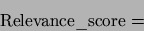
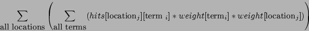
- term weight
- (
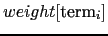) is taken from the topic definition
triplets.
- location weight
- (
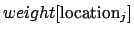) are
defined ad hoc for locations like title, metadata, HTML headings, and plain
text. However the exact values for these weights does not seem to play
a large role in the precision of the algorithm [10].
- hits
- (
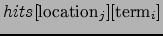) is the
number of times
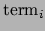 occur in the text of
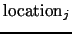
The summed relevance score might, for certain applications, have to be
normalized with respect to text size of the document.
One problem with this algorithm is that a term that is found in the
beginning of the text contributes as much as a term that is found at
the end of a large document. Another problem is the distance and thus
the coupling between two terms in a Boolean expression might be very
large in a big document and this is not taken into account by the
above algorithm.
Algorithm 2: position weighted matching
This algorithm is selected by setting the configuration parameter
classifyPlugIn = Combine::PosCheck_record
In response to the problems cited above we developed a modified
version of the algorithm that takes into account word position in the
text and proximity for Boolean terms. It also eliminates the need to
assign ad hoc weights to locations. The new algorithm works as
follows.
First all text from all locations are concatenated (in the natural importance order
title, metadata, text) into one chunk of text. Matching of terms is done
against this chunk. Relevance score is calculated as
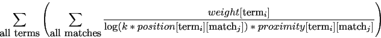
- term weight
- (
) is taken from the topic
definition triplets
- position
- (
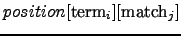) is the position
in the text (starting from 1) for
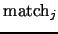 of
.
The constant factor
 is normally 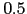
is normally 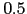
- proximity
- (
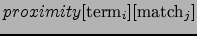) is
| 1 |
for non Boolean terms |
|
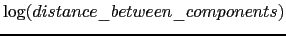 |
for Boolean terms |
In this algorithm a matched term close to the start of text contributes
more to the relevance score than a match towards the end of the
text. And for Boolean terms the closer the components are the higher
the contribution to the relevance score.
The configuration variable classifyPlugIn is used to find
the Perl module that implements the desired topic filter.
The value should be formatted as a valid Perl module identifier (i.e.
the module must be somewhere in the Perl module search path).
Combine will call a subroutine named 'classify' in this module,
providing an XWI-object as in parameter. An XWI-object is a structured object holding all information from
parsing a Web-page.
The subroutine must
return either 0 or 1, where
0: means record fails to meet the classification criteria, i.e. ignore this record
1: means record is OK, store it in the database, and follow the links
More details on how to write a Plug-In can be found in the example
classifyPlugInTemplate.pm.
Extra analysis is enabled by the configuration variable
doAnalyse (section 9.1.5). Among other things analysis tries to determine
the language of the text in the page. The URL is used to extract an
indication of the category (University, Education, Research,
Publication, Product, Top page, Personal
page) of a page.
Duplicates of crawled documents are automatically detected with the
aid of a MD5-checksum calculated on the contents of the document.
The MD5-checksum is used as the master record key in the internal
database thus preventing pollution with duplicate pages. All URLs
for a page are stored in the record, and a page is not deleted from
the database until the crawler has verified that it's unavailable
from all the saved URLs.
URLs for recycling come from 3 sources:
- Links extracted during HTML parsing.
- Redirects (unless configuration variable UserAgentFollowRedirects is set).
- URLs extracted from plain text (enabled by the configuration variable
extractLinksFromText (section 9.1.8)).
Automatic recycling of URLs is enabled by the configuration variable
AutoRecycleLinks (section 9.1.1). It can also be done
manually with the command
combineCtrl --jobname XXXX recyclelinks
The command combineCtrl --jobname XXXX reharvest marks all
pages in the database for harvesting again.
The tool combineUtil implements functionality for cleaning the database.
- sanity/restoreSanity
- checks respectively restore
consistency of the internal database.
- deleteNetLoc/deletePath/deleteMD5/deleteRecordid
- deletes
records from the database based on supplied parameters.
- serverAlias
- detects Web-server aliases in the database.
All detected alias groups are added to the serveralias configuration.
Records from aliased servers (except for the first Web-server) will be deleted.
The
SearchEngine-in-a-Box
system is based on the two systems Combine Focused Crawler and
Zebra text indexing and retrieval
engine. This system allows you build
a vertical search engine for your favorite topic in a few easy
steps.
The SearchEngine-in-a-Box
Web-site contains instructions and downloads
to make this happen. Basically it makes use of the
ZebraHost
configuration variable which enables direct communication between
the crawler and the database system and thus indexes records as soon
as they are crawled. This also means that they are directly searchable.
root
2008-04-23
![\includegraphics[width=\textwidth]{TopicFilter.xfig.eps}](img4.png)